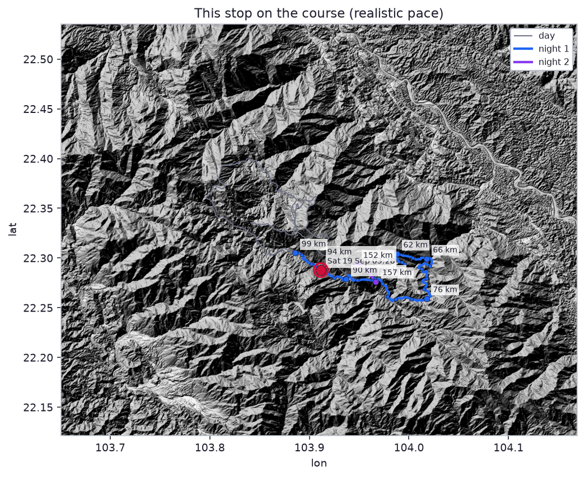
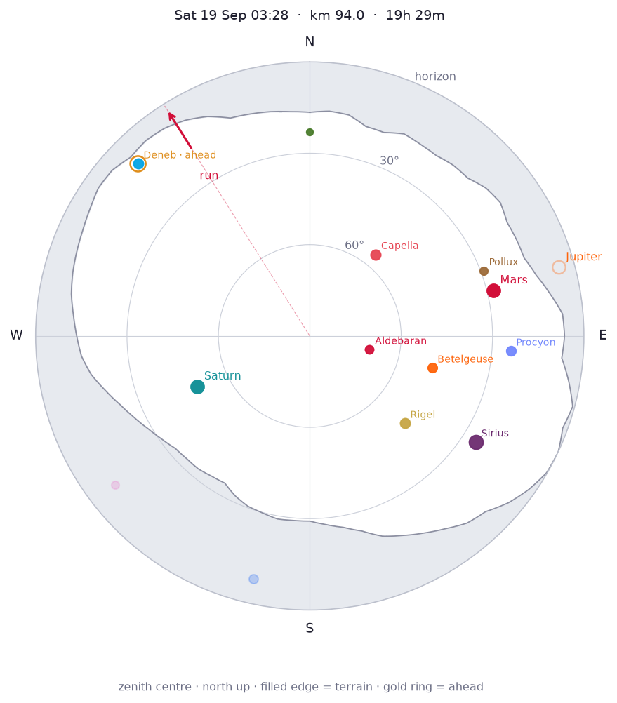
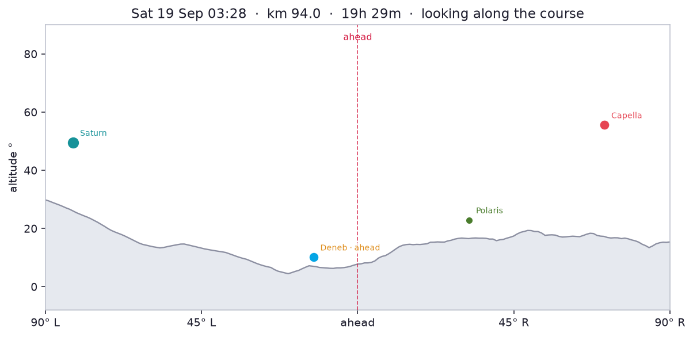

Moon first quarter, 50% lit, below the terrain horizon. Milky Way centre is below the local horizon. Overhead: Aries, Cetus, Perseus, Pisces, Taurus.



Planets
- Mars: 28° E (76°), mag 1.2
- Jupiter: 5° E (75°), mag -1.8 — behind terrain
- Saturn: 50° SW (246°), mag 0.4
Constellations
- Overhead: Aries, Cetus, Perseus, Pisces, Taurus
- Up: Andromeda, Auriga, Canis Major, Cassiopeia, Gemini, Lepus, Orion, Pegasus
- Rising: Canis Minor, Columba
- Setting: Cepheus, Cygnus, Ursa Minor
Bright stars
- Sirius (Canis Major): 25° SE (123°), mag -1.5
- Capella (Auriga): 56° NE (39°), mag 0.1
- Rigel (Orion): 48° SE (133°), mag 0.1
- Procyon (Canis Minor): 24° E (94°), mag 0.3
- Betelgeuse (Orion): 49° E (105°), mag 0.4
- Aldebaran (Taurus): 70° E (103°), mag 0.8
- Pollux (Gemini): 29° E (69°), mag 1.1
- Deneb (Cygnus): 10° NW (315°), mag 1.2
- Polaris (Ursa Minor): 23° N (360°), mag 2.0
Other stops this night
- km 62 · Fri 18 Sep 19:58
- km 66 · Fri 18 Sep 20:36
- km 76 · Fri 18 Sep 23:04
- km 86 · Sat 19 Sep 01:31
- km 90 · Sat 19 Sep 02:23
- km 99 · Sat 19 Sep 04:37
Same sky, different place: Night 2 · best stop km 152.
References
- Aldebaran · Grokipedia · Wikipedia
- Andromeda · Grokipedia · Wikipedia
- Aries · Grokipedia · Wikipedia
- Auriga · Grokipedia · Wikipedia
- Betelgeuse · Grokipedia · Wikipedia
- Canis Major · Grokipedia · Wikipedia
- Canis Minor · Grokipedia · Wikipedia
- Capella · Grokipedia · Wikipedia
- Cassiopeia · Grokipedia · Wikipedia
- Cepheus · Grokipedia · Wikipedia
- Cetus · Wikipedia
- Columba · Grokipedia · Wikipedia
- Cygnus · Grokipedia · Wikipedia
- Deneb · Grokipedia · Wikipedia
- Gemini · Grokipedia · Wikipedia
- Jupiter · Grokipedia · Wikipedia
- Lepus · Grokipedia · Wikipedia
- Mars · Grokipedia · Wikipedia
- Milky Way centre · Grokipedia · Wikipedia
- Moon · Grokipedia · Wikipedia
- Orion · Grokipedia · Wikipedia
- Pegasus · Grokipedia · Wikipedia
- Perseus · Grokipedia · Wikipedia
- Pisces · Grokipedia · Wikipedia
- Polaris · Grokipedia · Wikipedia
- Pollux · Grokipedia · Wikipedia
- Procyon · Grokipedia · Wikipedia
- Rigel · Grokipedia · Wikipedia
- Saturn · Grokipedia · Wikipedia
- Sirius · Grokipedia · Wikipedia
- Taurus · Grokipedia · Wikipedia
- Ursa Minor · Grokipedia · Wikipedia